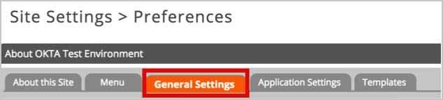
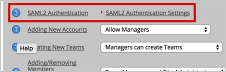
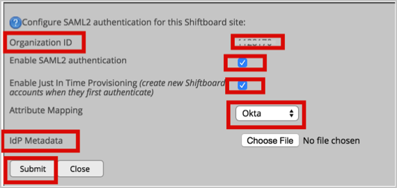
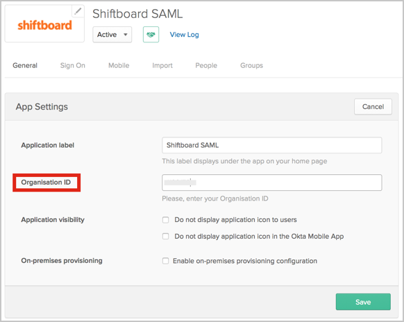

Log in to your Shiftboard account.
Navigate to Settings > General Settings > SAML2 Authentication Settings.


In the SAML2 Authentication settings (see screen shot at end of step for reference):
Organization ID: Make a note of this value, you will need to add this in Okta (see step 4).
Check the Enable SAML2 authentication box.
Check the Enable Just in Time Provisioning box.
Attribute Mapping: Choose Okta from the drop down menu.
IdP Metadata: Copy, then save the following IDP Metadata file as metadata.xml, then click Choose File and upload it to Shiftboard.
Sign in to Okta Admin app to have this variable generated for you.
Click Submit.

In Okta, select the General tab for the Shiftboard app, then click Edit.
Enter the Organization ID you previously made a note of.
Click Save.

Done!
Notes:
SP-initiated flows, IdP-initiated flows, and Just In Time (JIT) provisioning are all supported.